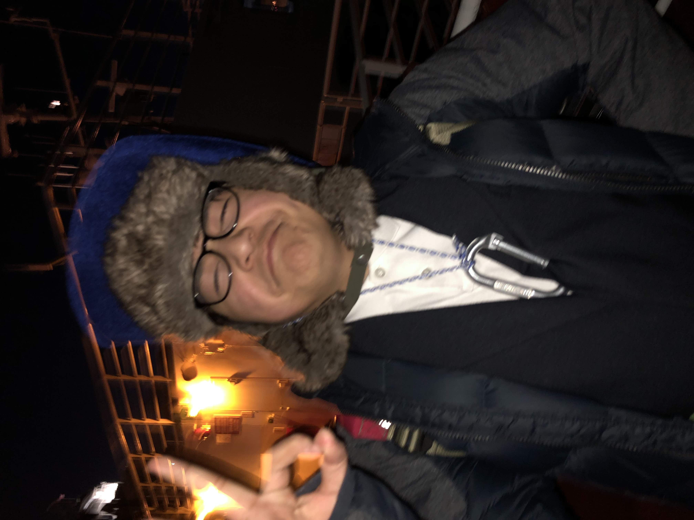
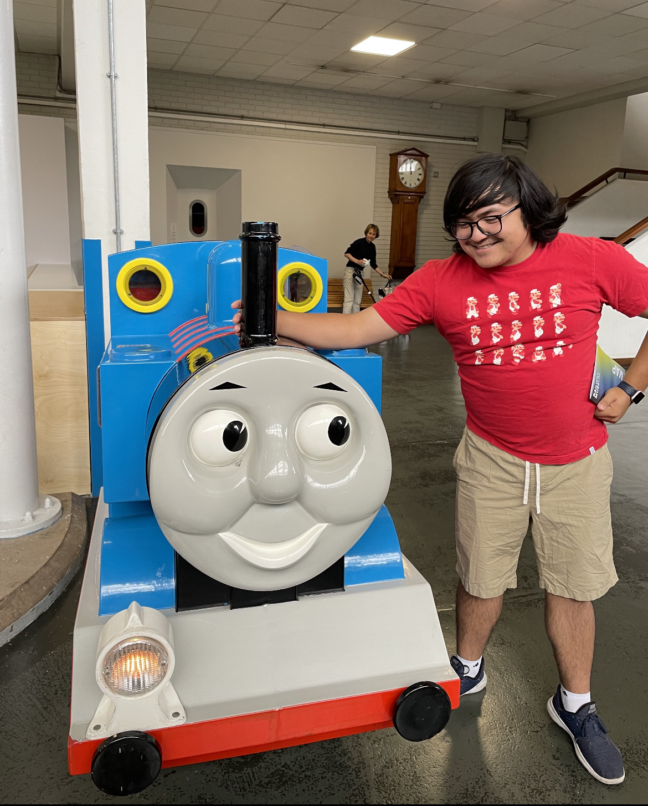
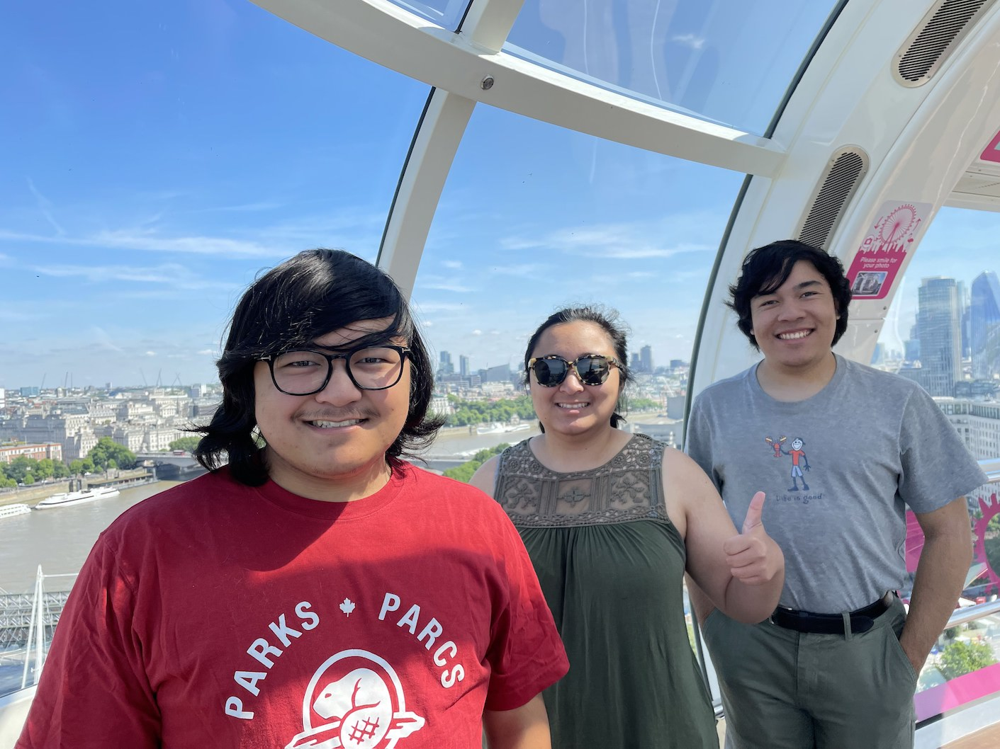
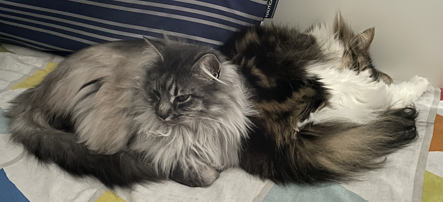

Hello! I’m Thomas Park. I was born on December 19, 2005 on this beautiful Earth and ever since then I think it got even more beautiful! Not because of me, but because of all the human achievement and advancement that have happened since then.
I live in Franklin, Massachusetts, a town that claims "America’s Oldest Public Library" for its library with books gifted by Benjamin Franklin.
As such, us Franklin residents mostly say we live in Boston to those overly curious tour guides.

I live with my dad Hojin, my mom Iris, my sister Kelley, and my brother Ethan. My dad was born in Korea and my maternal grandmother was born in the Philippines, making me Korean-Filipino-American.

I have two cats as well. Their names are Bean (right) and Rosie (left). Bean is a humble and very docile cat. On the other hand, Rosie is a menace who asks for food constantly and is a demonic yet very cute cat.
Outside of school and outside of extracurriculars, you can see me play and collect old video games, drawing in sketchbooks, jamming on the drums, making videos (on two channels), doing quick photoshops for memes, and all sorts of other creative whatnots.
Above is my video submission for Mass Academy if you’d like to learn more about me!
Community Service
For junior year at Mass Academy, each junior must complete 50 hours of community service before starting senior year. Here are some of my most frequent activities that I have done during my junior year!
STEM Saturdays
STEM Saturdays are events held by the Mass Academy Community Service (MACS) club on Saturdays around the Worcester area, typically outside (although in the winter we were mostly inside). I helped teach mini STEM workshops to young children, such as how to build a catapult with popsicle sticks and rubber bands. The best part about these events is that you get to take home the stuff that you play with! I certainly enjoy these events as they bring me back to when I was a child going to do similar activities at the Museum of Science in Boston. Giving back is good!
STEM Week
STEM Week is a dedicated week in October when Mass Academy students go to elementary/middle schools in the area and give dedicated STEM lessons to students (our October break coincides with this week, so it's perfect). I was part of the rollercoaster marble group. We spent some time after school every day cutting out paper tracks so that the students could construct rollercoaster tracks. I loved teaching the lessons to the children, as they each exuded joy and positivity when building the structures! It was a fun time.
Civics Workshop
Mass Academy held a Civics Workshop on March 18th, 2023, and I was one of the student helpers assigned to get conversation going amongst attendees. We planned out an agenda of how we were going to pull ideas from both students and teachers alike. The goal was to get as many ideas on how to deliver a Civics project, such as via a video or a speech to the community. The workshop overall taught me too lessons: there's so much to do if you study civics, and that we need to appreciate our teachers a lot!